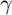
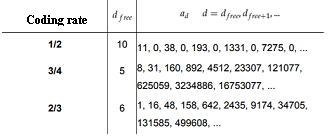

Predictive theoretical model of PER #3
Model of inhomogeneous errors in physical layer.
Contents
Syntax
PER = model_3(SNR, M, r, l)
Description
The model_3(SNR, M, r, l) function is a predictive theoretical model of PER that considers the non-uniformity of errors at the output of the physical layer due to the convolutional decoding process. The output bits depend on the input bits and the length of the code k, for IEEE 802.11p k=7.
The code termination technique is used to relate the error probability of the convolutional code to a block code, which has a simpler error probability. This technique ends a convolutional code after a certain number T of entries, this number T of symbols must contain at least k zeros at the end.
The PER value is given by the equation:

The parameter  is derived from the error exponent on block codes and the average length of error. The value d is the minimum distance of the convolutional code that represents the minimum distance of a code word that moves away from the path of all 0 in the Trellis diagram. The value a represents the number of roads in the Trellis diagram of length d. These values are constants obtained from the following table.

Input Arguments
- SNR
SNR value.
- M
Modulation scheme.
- r
Coding rate.
- l
Packet length in bits.
Output arguments
- PER
Calculated PER value.
Examples
The model_3(SNR, M, r, l) function is called.
function PER = model_3(SNR, M, r, l)
We only work with the BPSK modulation scheme, therefore M = 2, plus the length of the code k = 7 and the termination is going to be at 1.
M = 2;
nu = 7; % Constraint length
tau = l; % Termination
SNR = 10.^(SNR/10);
Depending on the coding rate, the parameters are chosen.
switch r case 1/2 n = 2; d = 10; A = 11; case 3/4 n = 4; d = 5; A = 8; case 2/3 n = 3; d = 6; A = 1; end
The value of lambda is given by the ecuation:

R = r * (1 - nu/tau);
EER = A*exp(-R*SNR*d);
Eexp = SNR/2 - sqrt(2*SNR*r) + r;
T = (nu+1) + 1./(n*Eexp);
P = T.*EER;
L = 1 - P;
lambda = EER./L;
The PER is calculated with the corresponding formula.
PER = 1 - (1 - lambda).^l;
if(PER<0)
PER = 1;
end
end
See also